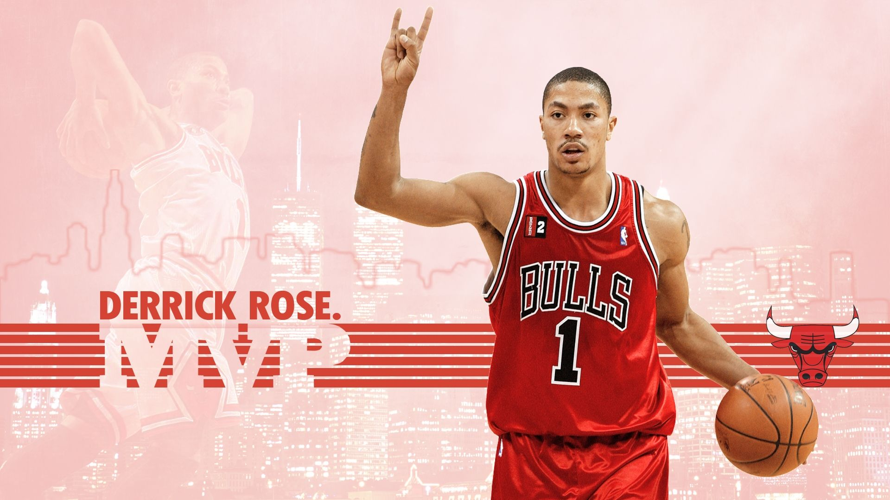

球星介绍
了解两位传奇球星的职业生涯
卡梅隆·安东尼
卡梅隆·安东尼（Carmelo Anthony），绰号"Melo"，1984年5月29日出生于美国纽约市布鲁克林区，前美国职业篮球运动员，司职小前锋。
职业生涯
| 时期 | 球队 | 主要成就 |
|---|---|---|
| 2003-2011 | 丹佛掘金 | 6次全明星，1次得分王 |
| 2011-2017 | 纽约尼克斯 | 4次全明星，1次得分王 |
| 2017-2019 | 俄克拉荷马雷霆 | 场均16.2分 |
德里克·罗斯
德里克·罗斯（Derrick Rose），1988年10月4日出生于美国伊利诺伊州芝加哥，美国职业篮球运动员，司职控球后卫。
职业生涯
| 时期 | 球队 | 主要成就 |
|---|---|---|
| 2008-2016 | 芝加哥公牛 | 1次MVP，3次全明星 |
| 2016-2017 | 纽约尼克斯 | 场均18.0分 |
| 2017-2018 | 克利夫兰骑士 | 场均9.8分 |
生涯数据对比
| 数据项 | 安东尼 | 罗斯 |
|---|---|---|
| 生涯得分 | 28,289 | 15,000+ |
| 场均得分 | 22.5 | 17.7 |
| 全明星次数 | 10 | 3 |
| 最佳阵容 | 6次 | 1次 |